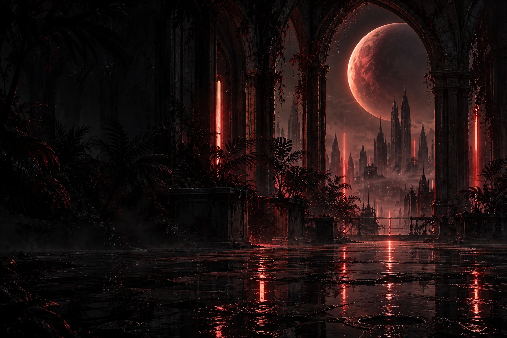

Curiosity, made tangible.
I like turning half-formed ideas into real things: tools, experiments, interfaces, physical objects, and occasional oddities that are interesting simply because they can exist.
This is the shelf where I keep the ones worth sharing.

The words around every page, translated
Half-formed ideas become real things: tools, interfaces, objects, oddities.
Some things are worth making simply because they can exist. Strange is allowed.
The shelf keeps changing. The bench shows what’s coming; the index shows what made it.
Each project credits the tools used to make it. Totals across the index:
Colophon
Static HTML, CSS and a little JavaScript. One JSON file for the index and one for the bench, and every page is built from them. Hosted on GitHub Pages.
Set in Cormorant Garamond and EB Garamond, with the incantations in UnifrakturMaguntia.